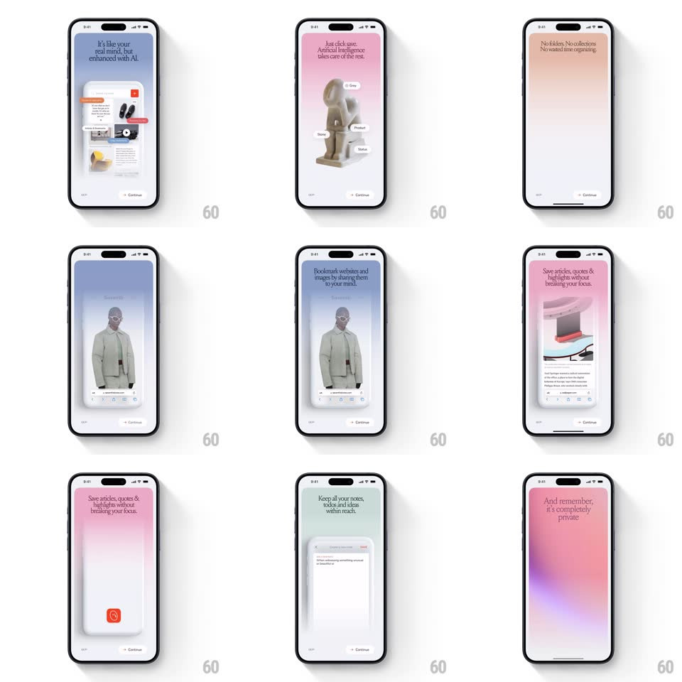

Media
Frame-by-frame

Rebuild this interaction 1:1: mymind's tap-to-advance onboarding story - a sequence of pastel full-screen cards ("It's like your real mind, but enhanced with AI", "No folders. No collections...", "Bookmark websites and images by sharing them to your mind"...) where each page's hero artwork builds with staggered element reveals.

Rebuild this interaction 1:1: mymind's tap-to-advance onboarding story - a sequence of pastel full-screen cards ("It's like your real mind, but enhanced with AI", "No folders. No collections...", "Bookmark websites and images by sharing them to your mind"...) where each page's hero artwork builds with staggered element reveals.
## Integration
Integration: stack-agnostic spec - springs given as stiffness/damping, timed motions as duration + curve; map every value to your framework and animation library of choice.
## Scene
Full-screen cards, each a different pastel wash (blue, pink, peach, lavender, mint) with a centered serif headline, a composed collage of product imagery below (screens, photos, contextual tag chips like "Slowy", "Product", "Colour", "Serendipity"), "Skip" bottom-left, "Continue" bottom-right.
## Motion spec
Pattern: paged story with staggered collage builds.
- Tap Continue (or right side): the current card slides out left and scales 0.96 (300ms, ease-out) while the next card slides in from the right, unblurring as it lands.
- On each card's entrance: the background wash fades in first (200ms), the headline rises 16px and fades (300ms), then the collage builds - hero image scales 0.9 -> 1 (spring ~280/22) and surrounding tag chips pop in around it (scale 0.5 -> 1, spring ~450/20, stagger 60ms).
- The share-sheet demo card animates its mini sheet rising inside the artwork; the AI card pulses its tag chips gently (scale 1 <-> 1.04, 1.6s loop).
- Skip jumps straight to the end with a fast crossfade (200ms).
## Calibration
- Each card owns one pastel hue; washes never mix mid-transition.
- Serif headlines are the constant - imagery changes, type treatment does not.
## Reduced motion
Cards crossfade; collage elements appear without springs or stagger.
## Don't miss
- Tag chips have tiny icon + word, like mymind's auto-tags, and they orbit the hero image at varied radii.
- The collage imagery is slightly rotated and overlapping - a mind-dump composition, not a grid.